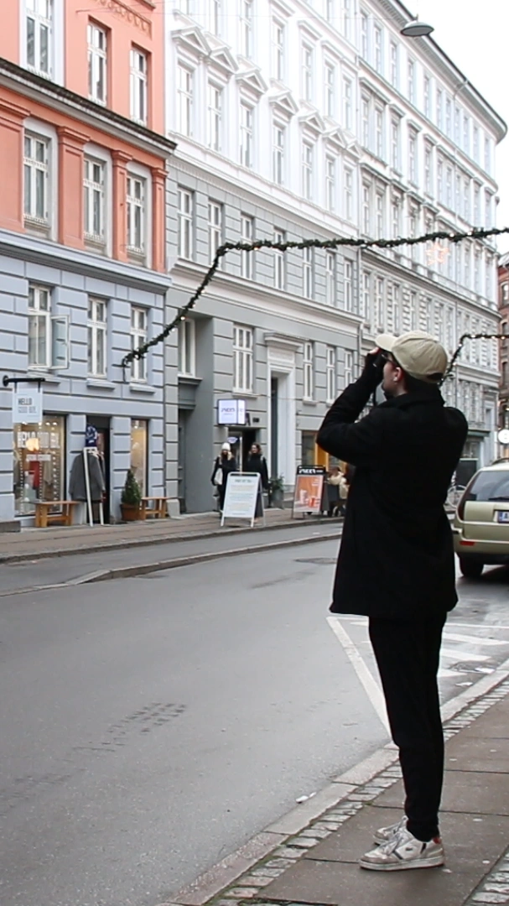
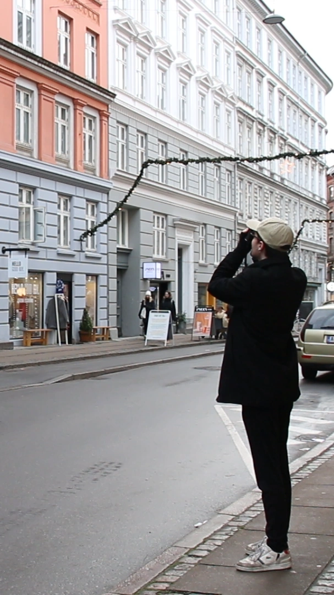

Fotografi som passion
Fotografiet og det at fotografere er en af Christophers helt store passioner, han kan godt lide hvordan man igennem et kamera kan stoppe tiden, og fange momenter, som normalt hurtig passerer. Det er en passion, som har udviklet sig meget for ham i takt med, at han har udviklet sig og ligeledes blevet bedre til det tekniske bag. Han beskriver hvordan det hele startede, da han var 12 år oppe hos hans mormor og morfar. Det han så, fotografere nu er helt anderledes fra, hvad det startede ud med for snart 10 år siden. Nu er Christopher især interesseret i menneskerne på billederne, hvilket kommer til udtryk i at han er begyndt at tage flere portrætter.
 
